class: left, name:opening # Brainlight - Computational Thomas L. Athey <br><br> <img src="images/funding/jhu_bme_blue.png" STYLE="HEIGHT:95px;"/> <img src="images/funding/KNDI.png" STYLE="HEIGHT:95px;"/> <br> .foot[w: <http://neurodata.io/talks/mouselight_20_01_15.html>] --- ## Outline - Linear Features - Gabor Filters - Logistic Regression - Experiments - Dimensionality Reduction --- ## .k[Linear Features] --- ## Linear Features - Pixel $p$ - $\overrightharpoon{x_p}$ - Local neighborhood around pixel - $\overrightharpoon{f_p} = W \overrightharpoon{x_p}$ - Features of pixel - Translation Invariance - Localized Information - Parallelizable <figure> 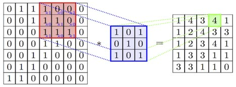 </figure> --- ## .k[Gabor Filters] --- ### Mathematical Motivation - Product of wave and Gaussian - Specifies frequency and spatial content - "Elementary Signal" with maximum possible density of time/frequency information [Gabor, 1946] --- ### Biological Motivation - Mimics simple cells in the mammalian visual cortex .pull-left[ <figure> <img src="images/mouselight/2020/Gabor_filter.png" STYLE="HEIGHT:300px;"/> <figcaption>Gabor Filter (wikipedia.com).</figcaption> </figure> ] .pull-right[ <figure> <img src="images/mouselight/2020/hw_gabor.png" STYLE="HEIGHT:300px;"/> <figcaption>Hubel and Wiesel, 1962.</figcaption> </figure> ] --- ## .k[Logistic Regression] --- ## Logistic Regression - $l_p$ - pixel label (neuron or background) - $l_p \sim Bern(\pi_p)$ How to relate $\pi_p$ and $f_p$? - $\eta_p = \log\frac{\pi_p}{1-\pi_p}$ - $\overrightharpoon{\beta}^T \overrightharpoon{f_p} = \eta_p$ Or - $\pi_p = \frac{1}{1+e^{-\overrightharpoon{\beta}^T \overrightharpoon{f_p}}}$ --- ## Parameter Esimation ($\overrightharpoon{\beta}$) - $l_p \sim Bern(\pi_p)$ - $\pi_p = \frac{1}{1+e^{-\overrightharpoon{\beta}^T \overrightharpoon{f_p}}}$ - Maximum Likelihood - Consistent, Asymptotically Normal - Convex Optimization --- ## .k[Experiments] --- ## Experiments ### Training Data - ~76000 pixels, equal neuron/background split - Neuron - Consensus Points (manual traces) - Every 10-100 um - Background - Offset Point ** ### Experiment - 5 fold cross validation --- ## Exp. 1 - Intensity Only <figure> 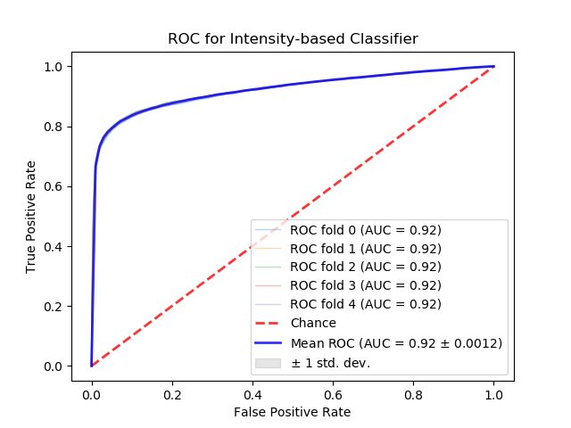 </figure> --- ## Exp. 1 - Intensity Only <figure> 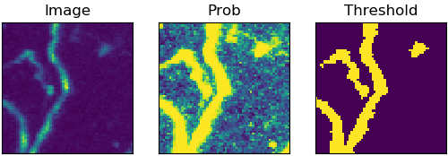 </figure> <figure> 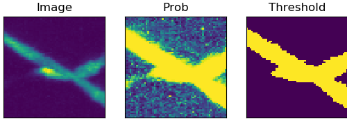 </figure> --- ## Exp. 2 - Linear Features - Features: Intensity, 3 Gaussian kernels, Gabor filters (36 combinations of parameters) <figure> 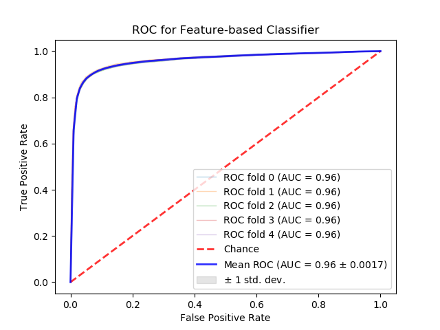 </figure> --- ## Exp. 2 - Linear Features <figure> 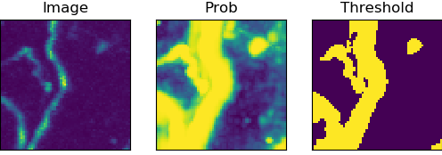 </figure> <figure> 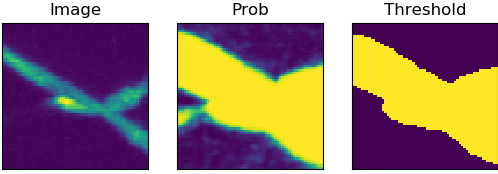 </figure> --- ## Semi-Automated Pixel-wise Segmentation .pull-left[ <figure> 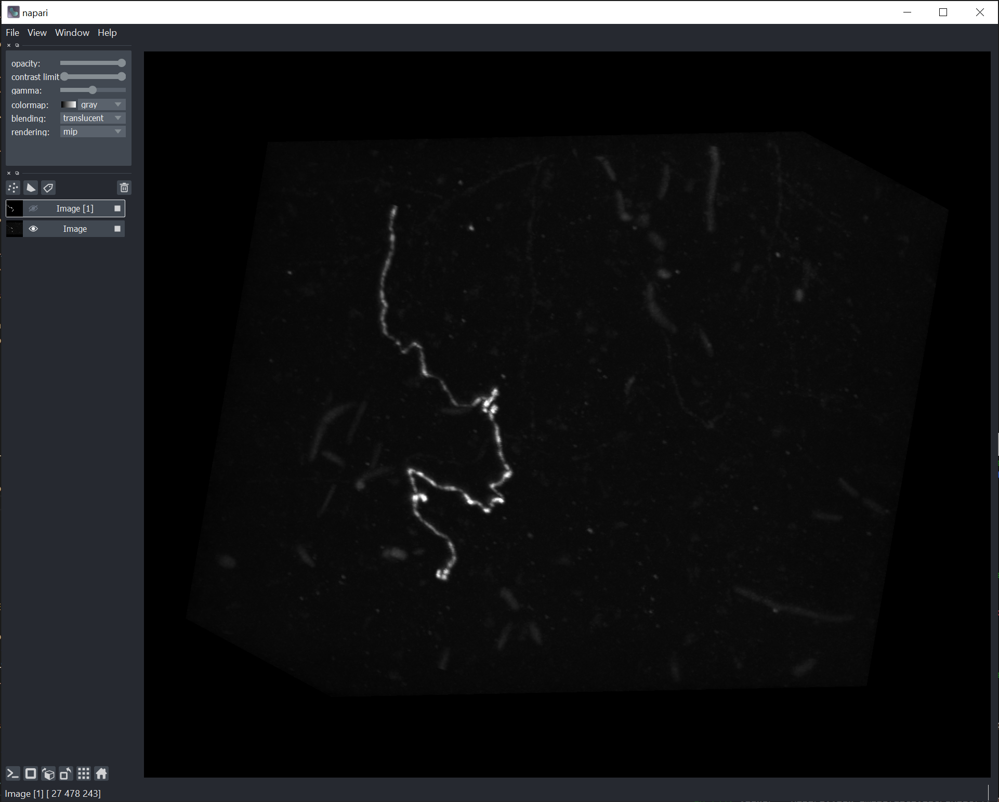 <figcaption>Image</figcaption> </figure> ] .pull-right[ <figure> 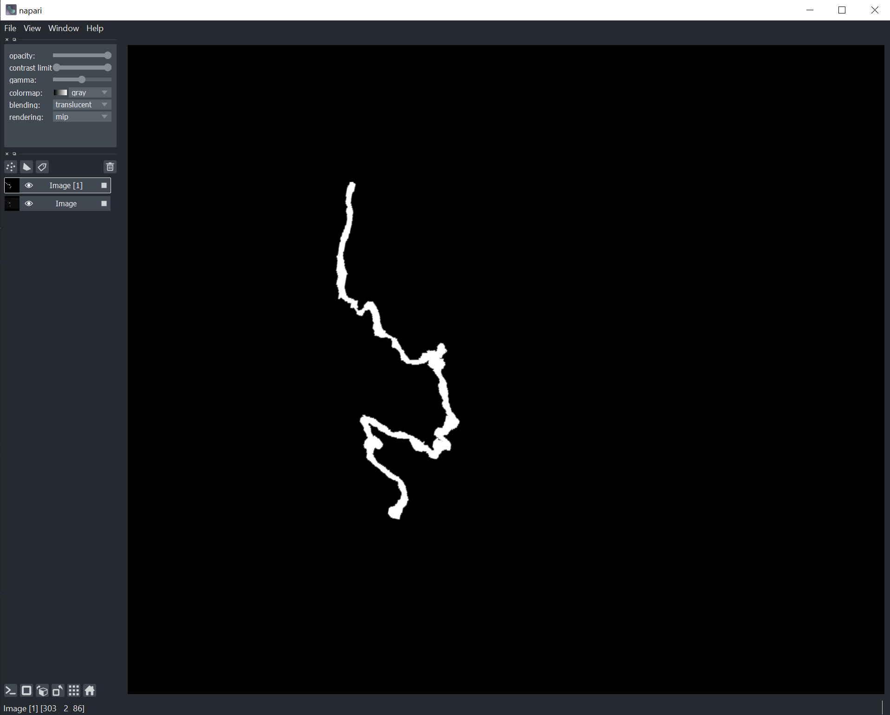 <figcaption>Trace</figcaption> </figure> ] --- ## Exp. 3 - Features + Pixel-wise <figure> 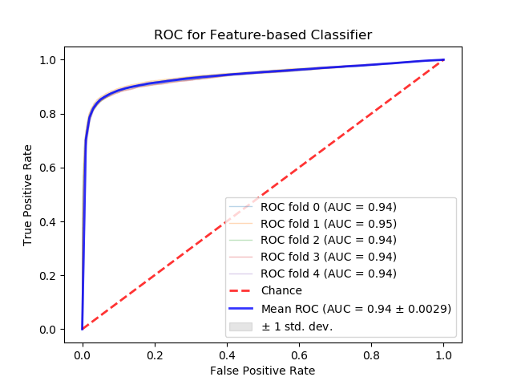 </figure> --- ## Exp. 3 - Features + Pixel-wise <figure> 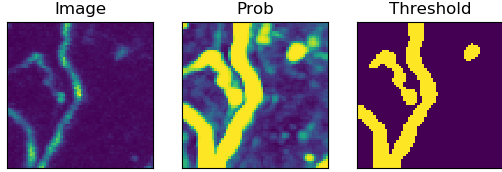 </figure> <figure> 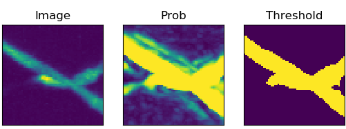 </figure> --- Segmentation of 60x60x200 um^3 volume <figure> 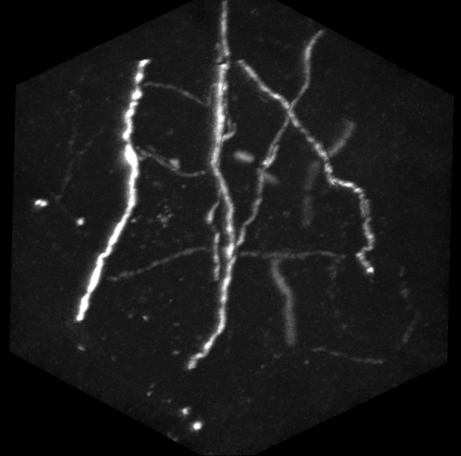 </figure> <figure> 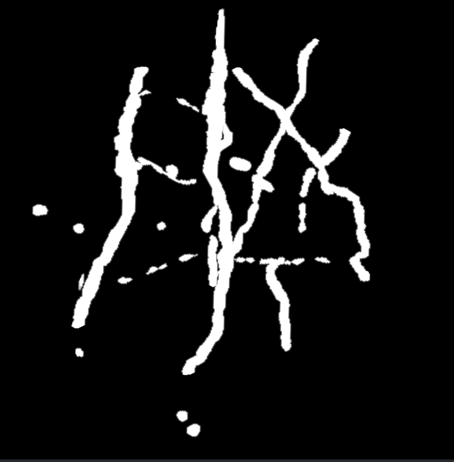 </figure> --- ## Next Steps - More pixel-wise training data - Segment larger volume - Filter out non-neuron "spots" - Connect segments --- class: top, left ### Thanks <div class="container"> <img src="faces/jovo.png"/> <div class="centered">Joshua Vogelstein</div> </div> <div class="container"> <img src="faces/mim.jpg"/> <div class="centered">Michael Miller</div> </div> <div class="container"> <img src="faces/jeremias.png"/> <div class="centered">Jeremias Sulam</div> </div> <div class="container"> <img src="faces/anthony.jpg"/> <div class="centered">Anthony Kolasny</div> </div> <div class="container"> <img src="faces/vikram.jpg"/> <div class="centered">Vikram Chandrashekhar</div> </div> <div class="container"> <img src="faces/bijan.jpg"/> <div class="centered">Bijan Varjavand</div> </div> <div class="container"> <img src="faces/blank.png"/> <div class="centered">Victor Wang</div> </div> <img src="images/funding/nih_fpo.png" STYLE="HEIGHT:95px;"/> w: <http://neurodata.io/talks/mouselight_20_01_15.html></http:> --- ### References - Mairal, J., Bach, F., & Ponce, J. (2014). Sparse modeling for image and vision processing. Foundations and Trends® in Computer Graphics and Vision, 8(2-3), 85-283. - Beer, M. (2001). Asymptotic Properties of the Maximum Likelihood Estimator in Dichotomous Logistic Regression Models. Diploma Thesis, Department of Mathematics, Faculty of Sciences, University of Fribourg Switzerland. - Bickel, P. J., & Doksum, K. A. (2015). Mathematical Statistics: Basic Ideas and Selected Topics, Volumes I-II Package. Chapman and Hall/CRC. ---